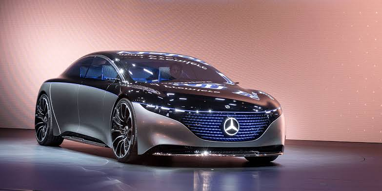
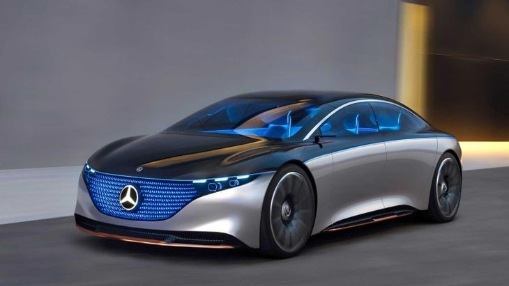
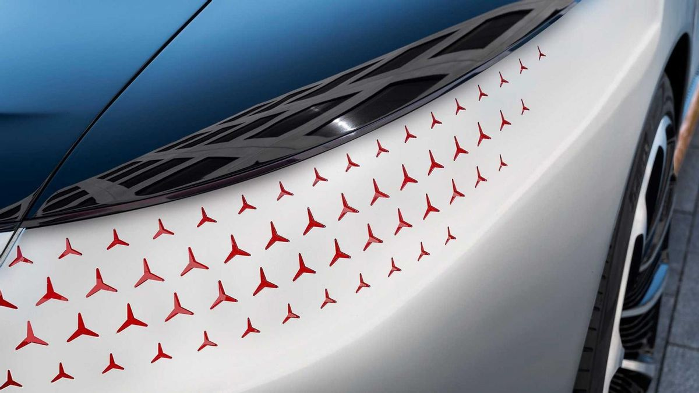
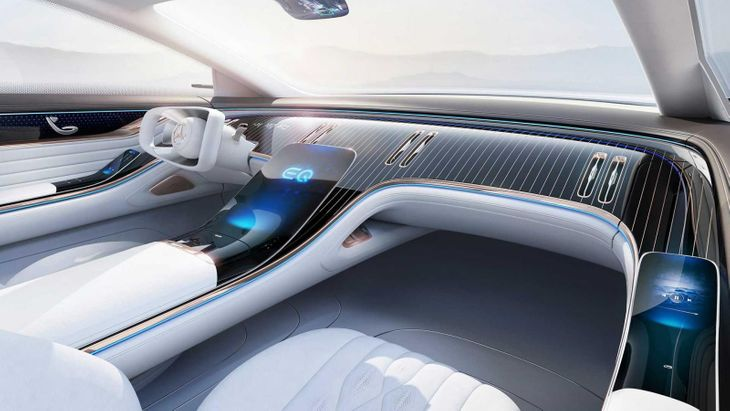
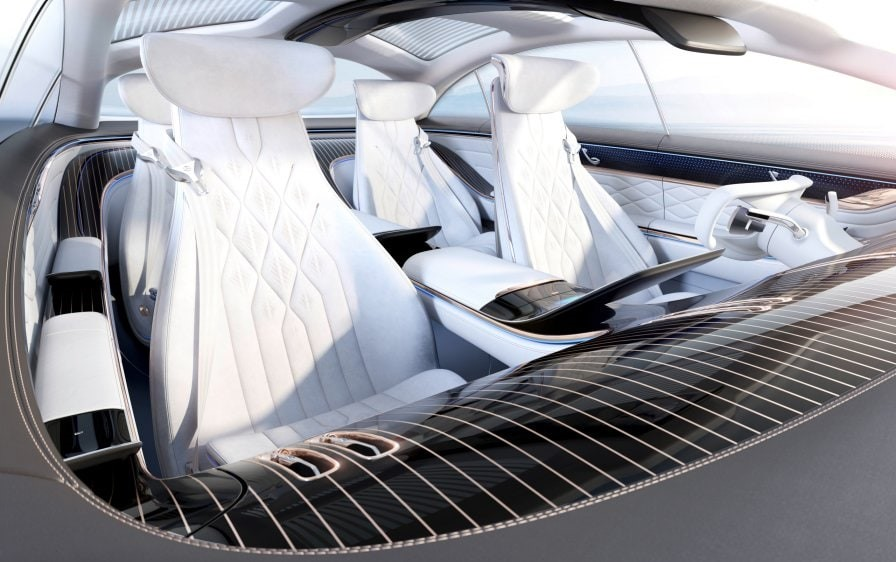
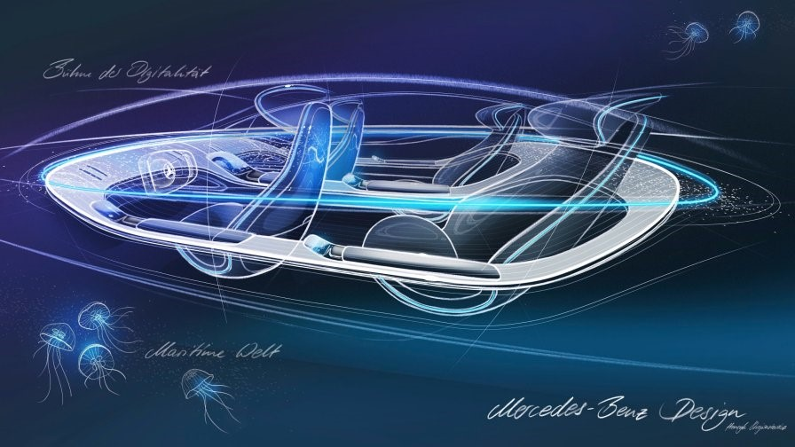
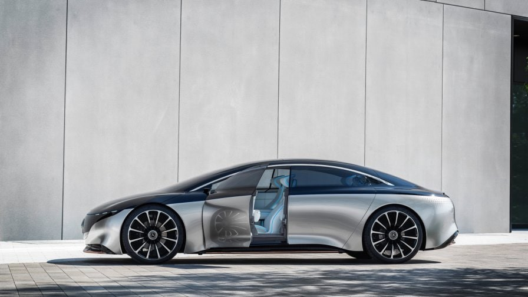
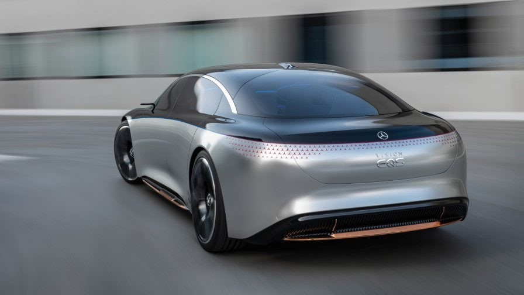
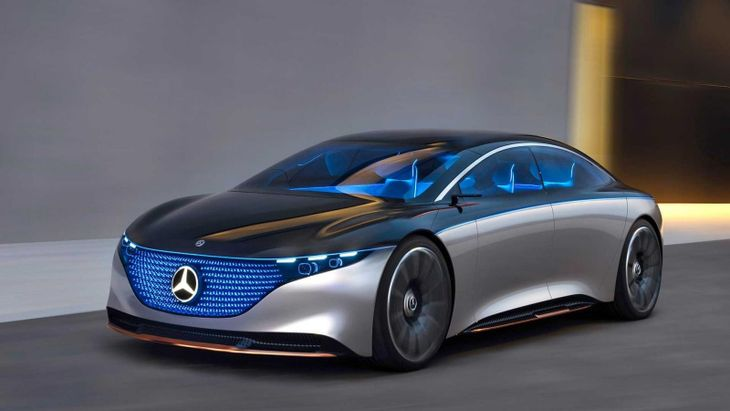
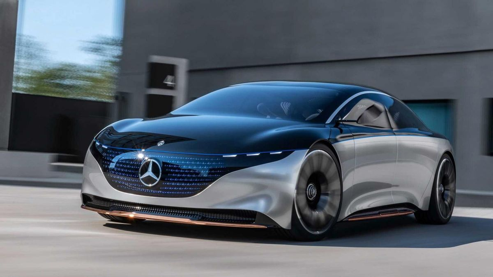

NEWS AND REVIEWS
Mercedes-Benz Vision EQS Showcases Electric Luxury
A milestone in a new era for the automobile.
The VISION EQS show car is an outlook on the future of Mercedes-Benz. Because two things are timeless: the need for mobility and the need for luxury. Plus an inner uncertainty about what will come next. The VISION EQS is a first milestone on the way to a CO₂-neutral mobility of the future. Mercedes-Benz has always stood for technical innovation, responsibility and fascination. And sustainability is now another integral component of the brand philosophy. The show car already meets these aspirations today, and gives an outlook on the future large, electric saloons by the brand.
Design: Sustainable. Intelligent. Luxurious.
With its innovative, stretched “one bow” design, the VISION EQS takes the Progressive Luxury design philosophy of the EQ models by Mercedes-Benz into a new dimension. The “seamless” look of this dramatic and powerful sculpture is what gives the VISION EQS its majestic presence. Technical features such as the 24-inch multi-spoke wheels, which form a jewel-like counter piece to the flowing body lines of the VISION EQS, emphasise the luxurious character of the saloon. As do the rear lights, which are for the first time seamlessly integrated into the body. With 229 individual LED stars they show a completely new approach to applying the brand logo
DIGITAL LIGHT headlamps
The significant contrast created by the continuous 360° exterior lightbelt joining the black-panel LED matrix grille and the headlamps with the rear light clusters defines a new form of exterior structure with its technical precision. The resulting colour division in the shoulder area not only creates a characteristically contrasting exterior. The impression of a glass dome floating on the vehicle body also visually stretches this ultra-modern saloon. At the same time the contrast underlines the aesthetic dynamism of the show car as a whole. However, the design goes another step further. Thanks to the seamless integration of the lights, the VISION EQS becomes a communicative vehicle, a “cooperative car”. The 360-degree exterior lightbelt, the digital LED matrix grille and the DIGITAL LIGHT headlamps allow interaction between the vehicle and its surroundings.

Membership of the EQ product family
The black-panel grille, which has been realised with several levels as a world first, provides a new level of precise signalling. Its light matrix consists of 188 circuit boards, each of which carries 5 individually actuated LEDs and a single star. With this total of 940 individual LEDs in a three-dimensional space, the light signals with which the vehicle communicates with its surroundings create a fascinating impression of depth. The lightbelt traversing the grille also indicates the membership of the EQ product family.
Flowing forms: the interior as a sculpture
An integrated interior emerging from the form and organically enveloping the occupants is the new interpretation of the Mercedes-Benz wrap-around effect. The interior design takes its inspiration from the world of luxury yachts. The clear and generous design idiom creates a new level of serenity. For the first time, the entire dashboard blends with the body of the front trim section to form an interior sculpture. With its deep and open spatial architecture, the cockpit of the VISION EQS envelops the occupants like the deck of a boat.
Presented in a highly artistic manner
The fully integrated, embracing overall sculpture consisting of the combined dashboard, centre console and armrests floats above the generous interior like a gentle, expansive landscape, and for the first time gives an outlook on the interiors of future luxury saloons by the brand. To emphasise this new spatial impression even more, the IAA show car is presented in a highly artistic manner so that the contours and lines in the interior are even more obvious to the eye.
Haptic vision: an outlook on the materials of the future
The innovative choice of materials for the interior of the VISION EQS is also intended to create a special ambience. Mercedes-Benz has systematically opted for sustainability, using both traditional and technologically pioneering materials. Crystal-white DINAMICA microfibre on the seats contrasts with rosé-gold coloured highlights at the seam ends of the contrasting diamond pattern. The floor area and door centre panels are in bright white. A dynamic, embossed diamond pattern presents the sustainably produced microfibre particularly impressively. Artificial leather is used at the side sills to create a harmonious counterpoint. Its finely structured surface is very similar to that of nappa leather, and has contrasting topstitching around the borders like that on familiar Exclusive leather features.
Advanced MBUX
The central display organically emerging from the centre console provides a specific outlook on new ergonomic concepts. Vehicle functions can now be operated by touch-control on the generous display surface. Maximum comfort on every seat: the side displays on the driver and front passenger seats allow individualisation of the driving experience by entering the Mercedes me ID – in future also for the front passenger. It is not only the displays that create a man-machine interface, but also the intelligent Connected Light, which runs around the entire interior like the 360° lightbelt on the exterior and is able to communicate by positioning information in space. On the one hand this ambient light band creates special lighting moods inside the vehicle, but it can also communicate information to the passengers.
Performance of a super sports car
A combined output of over 350 kW gives the VISION EQS the performance of a super sports car. With a compact high-performance power unit at each axle, the show car sets a new standard in EQ performance. Thanks to the intelligent and fully variable torque distribution, the immediately available power from the two motors is not only managed for best possible handling, but above all for outstanding efficiency. As a result, thanks to an intelligent operating strategy, the show car accelerates from 0-100 km/h in under 4.5 seconds and has a comfortable operating range of up to 700 kilometres according to WLTP. Above all, the latest-generation electric motors with highly-integrated power electronics and transmission ratios are a quantum leap in efficiency. At a charging output of 350 kW, the VISION EQS recharges the battery to 80% in significantly less than 20 minutes. Accordingly, the EQ concept not only impresses with its dynamism, but also sets new efficiency standards.
Fully-variable electric drive platform.
With the VISION EQS technology platform, Mercedes-Benz is opting for a completely new, fully-variable electric drive platform. This is in many respects scalable and usable on a cross-model basis: thanks to the modern modular system, the wheelbase and track, as well as all other system components, and especially the battery, are variable and therefore suitable for a wide range of different vehicle concepts. As is the case with modern series production models by Mercedes-Benz, the vehicle structure is based on an intelligent multi-material mix of steel, aluminium and carbon fibre, plus sustainable materials made from recyclates. This optimally meets the requirements with respect to lightweight design, strength, cost efficiency and sustainability
EQ models with battery cells from CO₂-neutral production.
In implementing its long-term goal of climate neutrality, Mercedes-Benz Cars is taking action in its supply chain as well as systematically electrifying the product range: for the next vehicle generation of the product and technology brand EQ, some of the battery cells are already to be wholly produced using power from renewable sources. In purchasing battery cells from CO₂-neutral production, Mercedes-Benz Cars is making a major contribution on the way to a CO₂-neutral new car fleet in twenty years.